حول المسافة إلى ثنائي الأشعة السينية ذي الثقب الأسود Swift J1727.8−1613
الملخص
نستعرض تقديرات المسافة الحالية إلى ثنائي الأشعة السينية ذي الثقب الأسود Swift J1727.8−1613 (catalog )، ونقدم أطيافاً راديوية وأخرى في الأشعة فوق البنفسجية القريبة لتحديث قيود المسافة، ونناقش دقة المنهجيات المرتبطة بها ومحاذيرها.
نستخدم أطياف امتصاص H i على خط النظر، الملتقطة بتلسكوب MeerKAT الراديوي، لتقدير سرعة شعاعية عظمى بالنسبة إلى معيار السكون المحلي قدرها
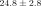
km s-1 لـ Swift J1727.8−1613 ، وهي أقل بكثير من نظيرتها لمصدر مرجعي قريب خارج المجرة. ومن ذلك نستنتج مسافة حركية قريبة قدرها kpc بوصفها حداً أدنى بعد احتساب لايقينيات إضافية مرتبطة بخط طوله وعرضه المجريين،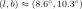
.تتيح لنا أطياف الأشعة فوق البنفسجية القريبة من مطياف التصوير الفضائي على متن تلسكوب هابل الفضائي تقييد فائض اللون على خط النظر عند .
ثم ندرج ذلك في محاكاة مونت كارلو ونقدم مسافة إلى Swift J1727.8−1613 قدرها kpc، على افتراض أن النجم المانح نجم غير متطور من النسق الرئيسي من النوع K4( 1)V.
وتقتضي هذه المسافة سرعة ركلة ولادية قدرها km s-1 ، ومن ثم انفجار مستعر أعظم غير متناظر داخل قرص المجرة بوصفه آلية التكوّن المتوقعة.
1)V.
وتقتضي هذه المسافة سرعة ركلة ولادية قدرها km s-1 ، ومن ثم انفجار مستعر أعظم غير متناظر داخل قرص المجرة بوصفه آلية التكوّن المتوقعة.
وتلزم مسافة أصغر إذا كان النجم المانح قد فقد بدلاً من ذلك قدراً كبيراً من كتلته أثناء تطور الثنائي. ومن ثم فإن القياسات الأدق لزاوية ميل الثنائي أو للتعريض الدوراني للنجم المانح من أرصاد مستقبلية ستساعد على تقييد المسافة على نحو أفضل.
1 المقدمة
تُعد المسافة معلمة مهمة في دراسة جميع الأجسام الفيزيائية الفلكية. وفي ثنائيات الأشعة السينية منخفضة الكتلة في المجرة (XRBs)، تتيح المسافات الدقيقة تقديراً أفضل لمعلمات أخرى، مثل نسبة ذروة لمعان إدنغتون (
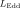
) (ELF) ومعلمات النفاثات، بما في ذلك مقاييس الحجم الفيزيائي وزوايا الميل والسرعات.قد يكون قياس المسافة إلى ثنائيات الأشعة السينية المكتشفة حديثاً على نحو موثوق أمراً صعباً. فعلى سبيل المثال، يمكن أن يتذبذب لمعان النظام عبر المراحل المختلفة للاندلاع، وغالباً ما ينتقل بين مستويات قابلة للرصد وأخرى دونها. وقد تحول قابلية الرصد غير المتسقة هذه دون الحصول على القياسات اللازمة لتحديد المسافة بدقة.
1.1 طرائق تحديد المسافة
يمكن تصنيف تقنيات تحديد المسافة المنطبقة على ثنائيات الأشعة السينية، على نطاق واسع، في ثلاث مجموعات: (1) طرائق فلكية قياسية أو حركية؛ و(2) مقاربات تستخدم أرصاد النجم المانح أو مصدر الأشعة السينية أو النفاثات؛ أو (3) تقنيات قائمة على آثار الانتشار. نلخص هذه الطرائق في الأقسام 1.1.1–1.1.3. ثم نناقش بمزيد من التفصيل التقنيتين اللتين نستخدمهما، واللتين تستغلان العلاقات بين المسافة وامتصاص H i في الأرصاد الراديوية (القسم 1.1.4)، وبين فائض اللون أو الاحمرار، ، كما يُقاس باستخدام أرصاد الأشعة فوق البنفسجية القريبة (القسم 1.1.5).
1.1.1 القياسات الفلكية الموضعية والحركيات
تُعد قياسات اختلاف المنظر عالية الدلالة لثنائيات الأشعة السينية باستخدام Gaia (Gaia Collaboration et al., 2016; Gandhi et al., 2019; Atri et al., 2019; Arnason et al., 2021) أو بالتداخل ذي الخط القاعدي الطويل جداً (VLBI) عند الأطوال الموجية الراديوية (مثلاً؛ Miller-Jones et al., 2009; Reid et al., 2011, 2014a; Atri et al., 2020; Miller-Jones et al., 2021; Reid and Miller-Jones, 2023) المعيار الذهبي لقياس المسافات إلى ثنائيات الأشعة السينية المجرية. غير أن اختلافات المنظر الراديوية قد يعيقها اتساع التشتت على خط النظر في ثنائيات الأشعة السينية الواقعة في مستوى المجرة (GP). وفي الواقع، يحول الانطفاء في مستوى المجرة وخفوت ثنائيات الأشعة السينية في حالة السكون دون الحصول على مسافات Gaia في حالات كثيرة. ونظراً إلى أن المسافات المعتادة لثنائيات الأشعة السينية تقع في مرتبة الكيلوفرسخ الفلكي (kpc)، فإن دقة دون المللي ثانية قوسية تكون مطلوبة (Tetarenko et al., 2016). وتتطلب هذه الطرائق أيضاً أرصاداً تمتد على إطار زمني طويل، وهو أمر لا يكون ممكناً دائماً في اندلاعات ثنائيات الأشعة السينية.
وبدلاً من ذلك، تستخدم منهجيات المسافة الحركية الحركات الذاتية المقيسة والسرعات المتنبأ بها من نموذج دوران المجرة لاستنتاج المسافة الأرجح. وعلى الرغم من اعتمادها على افتراض أن السرعات الخاصة صغيرة نسبة إلى معيار السكون المحلي (LSR)، يمكن لهذه الطرائق أن توفر مسافات موثوقة في بعض الظروف (Reid, 2022) وأن تكون مفيدة لثنائيات الأشعة السينية (مثلاً؛ Dhawan et al., 2007; Reid and Miller-Jones, 2023).
1.1.2 أرصاد النجوم والأشعة السينية والنفاثات
يمكن استخدام التحليل الطيفي البصري للنجم المانح في ثنائي الأشعة السينية لتقدير المسافة (مثلاً؛ Dubus et al., 2001; Jonker and Nelemans, 2004; Charles et al., 2019). ومع القيم المقيسة للقدرين المطلق والظاهري للنجم المانح وللانطفاء على خط النظر، يمكن استخدام معامل المسافة (مثلاً؛ Mata Sánchez et al., 2024, 2025) لاستنتاج المسافة، وفقاً لـ
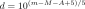 |
(1) |
حيث إن  هي المسافة، و
هي المسافة، و هو القدر الظاهري، و
هو القدر الظاهري، و هو القدر المطلق، و
هو القدر المطلق، و هو الانطفاء.
هو الانطفاء.
يكون حجب الضوء البصري واضحاً في الأهداف الواقعة في مستوى المجرة بسبب زيادة الغبار بين النجمي، مما يجعل تحديد النجوم المانحة صعباً ويدخل لايقينية إضافية في معادلة معامل المسافة. غير أن تقدير الانطفاء بدقة قد يكون أصعب في الأهداف الواقعة خارج مستوى المجرة.
لوحظ أن لمعاني الأشعة السينية لاندلاعات ثنائيات الأشعة السينية أثناء انتقالات الحالة من اللينة إلى الصلبة ومن الصلبة إلى المتوسطة تحدث عند قيم ELF متسقة إلى حد ما، وإن كان مع تشتت بعامل قدره
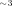
في هذه القياسات (Kalemci et al., 2013; Tetarenko et al., 2016; Vahdat Motlagh et al., 2019). وتتيح دراسات الأشعة السينية أثناء هذه الانتقالات مقارنة اللمعانين الجوهريين المقيس والمتوقع، ومن ثم تقدير المسافة (مثلاً؛ Abdulghani et al., 2024).وتوجد طرائق إضافية في الأشعة السينية، منها الجمع بين التحليل الطيفي للأشعة السينية واعتمادية ملاءمات طيف قرص التراكم على المسافة، وهي الطريقة التي طبقها Hynes et al. (2002) لتقييد المسافة إلى XTE J1859+226. كذلك استخدم Powell et al. (2007) المقياس الزمني لانحسار منحنيات الضوء بالأشعة السينية في الاندلاع لتقدير اللمعان المطلق عند زمن مميز، ومن ثم تقديم مقياس للمسافة.
وفي النطاق الراديوي، يمكن الجمع بين الحركات الذاتية للنفاثات ثنائية الجانب لوضع حد أعلى لمسافة المصدر (مثلاً، Mirabel and Rodríguez, 1994).
1.1.3 الانتشار والوسط بين النجمي
تنتشر الأشعة السينية الناتجة عن توهجات ثنائيات الأشعة السينية إلى الخارج وقد تتشتت لاحقاً بفعل سحب الغبار بين النجمي المتداخلة. وإذا أمكن تحديد المسافات إلى هذه السحب الغبارية، يمكن دمج هذه المعلومات مع تحليل التأخيرات الزمنية وشدات حلقات تشتت الأشعة السينية الغبارية المتمددة لقياس المسافة إلى المصدر (مثلاً؛ Heinz et al., 2015; Beardmore et al., 2016; Lamer et al., 2021).
يمكن استخدام سمات الامتصاص في الأشعة السينية ضمن الأطياف المرصودة لقياس كثافة عمود الهيدروجين، . وعند اقتران ذلك بنماذج توزع الهيدروجين، يمكن استنتاج المسافة إلى المصدر.
1.1.4 امتصاص H I
تستخدم طريقتنا الأولى لتحديد المسافة امتصاص H i ، الذي يمكن رصده عندما تمتص سحب الهيدروجين المتعادل على خط النظر الانبعاث المتصل عريض النطاق الصادر عن الهدف عند تردد H i في إطار سكونها. وتتحرك هذه السحب بسرعات مختلفة بالنسبة إلينا على امتداد خط النظر، بسبب دوران درب التبانة، إضافة إلى آثار أخرى مثل حركات الجريان غير الدائرية التي نفترض أنها ضئيلة. وكلما زاد عدد السحب التي يقطعها خط النظر، زاد عدد سمات امتصاص H i المطبوعة عند ترددات مختلفة على الطيف الراديوي المرصود. ومن مزايا امتصاص H i مقارنة باختلاف المنظر أن البيانات المطلوبة يمكن جمعها ضمن إطار زمني أقصر بكثير؛ إذ يمكن لرصد واحد أن يكفي إذا كان المصدر المرصود ساطعاً على نحو خاص.
يمكن تحويل الترددات المزاحة دوبلرياً إلى سرعات بالنسبة إلى LSR ومقارنتها بمنحنى دوران درب التبانة. وتحدث السرعة العظمى عند نقطة التماس، حيث تكون السرعة الدورانية بأكملها على امتداد خط النظر. وتُرى سرعات متطابقة على جانبي هذه القيمة العظمى، مما ينشئ التباساً في إسناد سرعات الامتصاص المرصودة إلى مسافات داخل الدائرة الشمسية. فقد تقابل سرعة عظمى مرصودة أصغر من سرعة نقطة التماس مسافة حركية قريبة قبل نقطة التماس، أو مسافة حركية بعيدة بعدها (مثلاً؛ Wenger et al., 2018, الشكل 4).
ولحل هذا الالتباس في المسافة الحركية، ينبغي رصد الهدف وكذلك مصدر مرجعي واحد على الأقل خارج المجرة يكون قريباً بما يكفي من الهدف في السماء بحيث تُصغَّر أي فروق في توزيعات H i المتوقعة على امتداد خطوط النظر. فانبعاث المصدر المرجعي يكون قد مر بجميع سحب H i المجرية على امتداد خط النظر، مع قيام السحب الواقعة خارج الدائرة الشمسية بطبع سرعات امتصاص ذات إشارة معاكسة. وبذلك فإن أي امتصاص موجود في طيف المرجع وغائب عن طيف الهدف يتيح لنا وضع حد أعلى للمسافة.
1.1.5
تعتمد طريقتنا الثانية لتحديد المسافة على الاحمرار الناجم عن تشتت الأطوال الموجية الأقصر تفضيلياً بفعل الغبار بين النجمي.
ويمكن تحديد ذلك بطرح الفرق المرصود بين القدرين الأزرق والمرئي،  و
و ، لقياس الاحمرار على امتداد خط النظر.
، لقياس الاحمرار على امتداد خط النظر.
يمكن حساب باستخدام علاقات مختلفة بينه وبين خطوط الامتصاص بين النجمية (مثلاً؛ Munari and Zwitter, 1997; Wallerstein et al., 2007)، أو (مثلاً؛ Mata Sánchez et al., 2025). ويمكن تقديره من خرائط الغبار المجرية، سواء 2-الأبعاد (2D؛ مثلاً؛ Schlegel et al., 1998; Chiang, 2023) أو 3-الأبعاد (3D؛ مثلاً؛ Green et al., 2019; Edenhofer et al., 2024). كما يمكن استخدام أطياف الأشعة فوق البنفسجية القريبة، كما نطبق في القسمين 2.2 و3.2.
 متوسطاً مجرياً مع
متوسطاً مجرياً مع1.2 Swift J1727.8−1613
رُصد Swift J1727.8−1613 (J1727)، الواقع عند
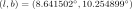
، لأول مرة عابراً في الأشعة السينية في 24 أغسطس 2023 (Negoro et al., 2023). ورُصد انبعاث راديوي ساطع خلال بضعة أيام (Miller-Jones et al., 2023b)، واستمر في الازدياد سطوعاً حتى أوائل سبتمبر (Bright et al., 2023). وكشف تحليل الأرصاد في أواخر أغسطس وأوائل سبتمبر عن نواة ساطعة ونفاثة كبيرة ثنائية الجانب وغير متناظرة (Wood et al., 2024). وأشارت المراقبة الراديوية في أوائل أكتوبر إلى خمود راديوي وتوهج لاحق (Miller-Jones et al., 2023a).واعتُبر هذا الحدث اندلاعاً لثنائي أشعة سينية منخفض الكتلة (Castro-Tirado et al., 2023)، وجعل سطوعه الراديوي العالي J1727 هدفاً مناسباً لقياسات امتصاص H i. ومنذ ذلك الحين، تأكد ديناميكياً أن الجسم المدمج ثقب أسود (BH) (Mata Sánchez et al., 2025, MS25 فيما بعد).
وكشفت دراسات إضافية للاندلاع أنه أنتج نفاثات نسبية هي أكبر نفاثات مفصولة مكانياً في ثنائي أشعة سينية حتى الآن (Wood et al., 2024). كما تبيّن أن قذف النفاثات العابرة في J1727 حدث بالتزامن مع توهج ساطع في الأشعة السينية وتغير مفاجئ في خصائص تدفق التراكم في الأشعة السينية (Wood et al., 2025).
يمتلك النظير البصري لـ Swift J1727.8−1613 في Gaia حالياً حركة ذاتية، لكنه لا يمتلك اختلاف منظر. ولن يكون اختلاف المنظر الراديوي باستخدام VLBI ممكناً بالأرصاد المأخوذة حتى الآن، لأن ثنائي الأشعة السينية عاد بالفعل إلى حالة السكون.
1.2.1 تقديرات المسافة الحالية
قدّر Abdulghani et al. (2024) مسافة قدرها
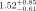
kpc من مقاربة بايزية لنمذجة الأشعة السينية في الحالة اللينة. وبدا أن هذا يتفق مع Veledina et al. (2023) الذين استخدموا حجج تحجيم تدفق الأشعة السينية لتقديم تقدير مبكر يقارب kpc.
غير أن Abdulghani et al. (2024) يقرون بأن تقديرهم للمسافة قد يكون ناقصاً بما يصل إلى
kpc.
غير أن Abdulghani et al. (2024) يقرون بأن تقديرهم للمسافة قد يكون ناقصاً بما يصل إلى 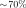
، نظراً إلى أنهم استخدموا بيانات الحالة اللينة فقط من دون معلومات عن انتقالات الحالة.استخدم Mata Sánchez et al. (2024, MS24 فيما بعد) أقدار النجم المانح بالاقتران مع علاقات مختلفة في الأدبيات لاشتقاق قيم معلمات المعادلة 1. وشمل ذلك العلاقة بين ثنائية Ca ii بين النجمية (H وK) والمسافة إلى النجوم المبكرة النوع وفق Megier et al. (2009). وقد عُيّرت هذه العلاقة باستخدام أجسام تقع ضمن بضع مئات من الفرسخ الفلكي من مستوى المجرة (حتى 450 pc)، وهي قيمة أدنى قليلاً من الارتفاع النهائي المستنتج لـ J1727 لكنها لا تزال متسقة معه. واستخدم المؤلفون أيضاً العلاقات بين العروض المكافئة للخط بين النجمي K i عند 7699 Å وحزمة بين نجمية منتشرة عند 8621 Å و وفق Munari and Zwitter (1997) وWallerstein et al. (2007) على التوالي. إلا أن هذه العلاقات أسفرت عن قيم كبيرة على نحو خاص لـ ، بلغت
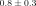
و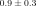
على التوالي. وأخيراً، جُمعت العلاقة بين كثافة عمود الهيدروجين والانطفاء في حزمة ،
،  ، وفق Güver and Özel (2009) مع المعادلة 2 لاستنتاج .
وتغطي قيم هذه نطاقاً واسعاً، ويرتبط ببعضها لايقينيات كبيرة تنتقل إلى قيود المسافة.
ونناقش ذلك بمزيد من التفصيل في القسم 4.2.1 باستخدام نتائجنا في الأشعة فوق البنفسجية القريبة وخرائط الغبار المجرية.
، وفق Güver and Özel (2009) مع المعادلة 2 لاستنتاج .
وتغطي قيم هذه نطاقاً واسعاً، ويرتبط ببعضها لايقينيات كبيرة تنتقل إلى قيود المسافة.
ونناقش ذلك بمزيد من التفصيل في القسم 4.2.1 باستخدام نتائجنا في الأشعة فوق البنفسجية القريبة وخرائط الغبار المجرية.
وبناءً على ما سبق، حسب MS24 المتوسط المرجح للمسافات الناتجة فوجد أنه
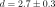
kpc. ثم قاس MS25 الفترة المدارية مباشرة، ، وأبلغ أن قالب النوع الطيفي الأفضل ملاءمة هو K4( 1)V لنجم مانح يحجبه قرص التراكم جزئياً.
وباستخدام ذلك، نقحوا القدر المطلق في حزمة
1)V لنجم مانح يحجبه قرص التراكم جزئياً.
وباستخدام ذلك، نقحوا القدر المطلق في حزمة  إلى
إلى  mag.
وقاسوا أيضاً قدراً ظاهرياً في حزمة
mag.
وقاسوا أيضاً قدراً ظاهرياً في حزمة  قدره
قدره  mag، وقدموا متوسطاً مرجحاً موحداً ومحدثاً للمسافة قدره
mag، وقدموا متوسطاً مرجحاً موحداً ومحدثاً للمسافة قدره 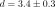
kpc.1.2.2 محتويات الورقة
| MJD | Observation | Observation | Exposure | L-band | Centre | Total | Channel | J1727 peak |
|---|---|---|---|---|---|---|---|---|
| start date | start time | time | mode | frequency | bandwidth | width | flux density | |
| (dd-mm-yyyy) | (hh:mm:ss) | (mm:ss) | (MHz) | (MHz) | (kHz) | (mJy) | ||
| 60183 | 27-08-2023 | 15:27:59.6 | 14:55.6 | Standard | 1283.9869 | 856 | 26.123 | |
| 60193 | 06-09-2023 | 15:06:32.1 | 14:56.9 | Zoom | 1419.9984 | 107 | 3.265 | |
| 60231 | 14-10-2023 | 12:40:20.2 | 14:55.6 | Standard | 1283.9869 | 856 | 26.123 | |
| 60233 | 16-10-2023 | 15:50:13.8 | 14:56.9 | Zoom | 1419.9984 | 107 | 3.265 |
في القسم 2 نفصل الطرائق المستخدمة والبيانات التي حصلنا عليها. وفي القسم 3 نقدم أطياف امتصاص H i والأشعة فوق البنفسجية القريبة. وفي القسم 4 نناقش تفسير نتائجنا في تقييد المسافة إلى J1727 ، إلى جانب محاذير متنوعة وتبعاتها على سرعات الركلة الولادية ونسب لمعان إدنغتون. وفي القسم 5 نقدم المسافة التي نقترحها إلى J1727.
2 الأرصاد واختزال البيانات
2.1 بيانات MeerKAT الراديوية
رصدنا J1727 ضمن مشروع المسح الكبير The hunt for dynamic and explosive radio transients with MeerKAT11 1 http://science.uct.ac.za/thunderkat (ThunderKAT؛ Fender et al., 2016) وخليفته X-KAT (PI Fender).
أجرينا أرصاداً راديوية عند 1–2 GHz (حزمة L) لحقل J1727 باستخدام التلسكوب الراديوي MeerKAT، وهو سلف مصفوفة الكيلومتر المربع في جنوب أفريقيا (Camilo, 2018)، بين 27 أغسطس و16 أكتوبر 2023. وقعت كثافات التدفق التي قسناها لـ J1727 ضمن النطاق 50–837 mJy بسبب توهج المصدر راديوياً. وترد تفاصيل إضافية عن هذه الأرصاد في الجدول 1.
نُفذت جميع الأرصاد بمستقبل حزمة L؛ اثنان منها باستخدام نمط MeerKAT القياسي “32k”، واثنان باستخدام نمط “32k zoom”، وسنشير إليهما فيما يلي باسم “32k-S” و“32k-Z” على التوالي. وعلى الرغم من أن كل نمط يحتوي على 32,768 قناة، فإن نمط 32k-Z يمتلك عروض نطاق للقنوات أصغر بثماني مرات، وبذلك يوفر زيادة بمقدار ثمانية أضعاف في الاستبانة الترددية. وناوبنا مسوحاتنا الرصدية بين J1727 ومعاير الطور PKS J1733−1304 (J1733 فيما يلي)، مع مسح واحد لمعاير نطاق التمرير والتدفق J1939−6342 في كل رصد.
بعد حصولنا على أرصاد MeerKAT لـ J1727 عندما كان ساطعاً بما يكفي (أي  mJy) عند 1.4 GHz، حسبنا أطياف امتصاص H i بمعالجة البيانات الراديوية لإنشاء طيف راديوي يتضمن تردد خط H i الطيفي،
mJy) عند 1.4 GHz، حسبنا أطياف امتصاص H i بمعالجة البيانات الراديوية لإنشاء طيف راديوي يتضمن تردد خط H i الطيفي،
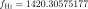
MHz. ونحوّل انزياحات دوبلر في التردد إلى سرعات LSR على خط النظر. ثم نقارن السرعة الموجبة أو السالبة العظمى المرصودة في الأطياف الناتجة بمنحنى دوران درب التبانة لتوليد تقديرات للمسافة الحركية عبر الشفرة المصدرية لأداة حساب المسافة الحركية22 2 http://www.treywenger.com/kd/,33 3 http://github.com/tvwenger/kd (KDCT؛ Wenger, 2018).2.1.1 اختيار المصدر المرجعي
نظراً إلى عدم وجود مصادر خلفية ساطعة (
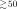
mJy) خارج مجرية في الحقل، أي ضمن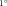
من J1727 ، استخدمنا معاير الطور الساطع (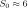
Jy) J1733 لاشتقاق أطياف امتصاص H i المرجعية. وبما أن J1733 يقع عند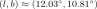
، فإن الحقلين تفصل بينهما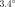
فقط، أساساً في خط الطول المجري. وبما أن J1733 خارج مجري، تتيح لنا الأرصاد سبر المجموعة الكاملة من سحب H i على امتداد خط نظر قريب (انظر أيضاً القسم 4.1.2 بشأن ارتفاع مقياس H i).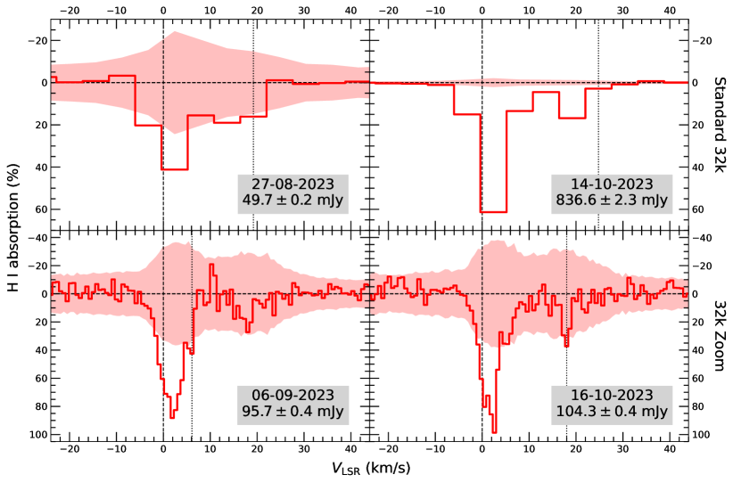
 و
و .
يمثل المحور
.
يمثل المحور  البواقي بعد طرح انبعاث المتصل من البيانات، مع لايقينيات
البواقي بعد طرح انبعاث المتصل من البيانات، مع لايقينيات 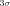
المبينة بالمناطق المظللة، وكلاهما معروض كنسبة مئوية من كثافة تدفق المتصل للمصدر. تشير الخطوط الرأسية المنقطة إلى السرعة العظمى المأخوذة بوصفها نقطة منتصف الصندوق الذي يُرصد عنده امتصاص معنوي ( ).
وبالترتيب الزمني، تكون هذه السرعات العظمى
).
وبالترتيب الزمني، تكون هذه السرعات العظمى
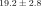
,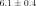
, ، و
، و
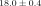
km s-1. وقد أتاح ارتفاع SNR في طيف 14-10-2023 على نحو ملحوظ رصد امتصاص H i معنوي (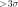
) حتى سرعات أكبر من تلك المرصودة في أطياف 32k-Z.2.1.2 اختزال البيانات
أجرينا جميع عمليات اختزال البيانات على البنية التحتية السحابية البحثية Ilifu التي يديرها Inter-University Institute for Data Intensive Astronomy (IDIA)44 4 http://idia.ac.za/ilifu-research-cloud-infrastructure/. ولتيسير معالجة بيانات H i الخاصة بنا، استخدمنا خط معالجة ThunderKAT H i Pipeline55 5 http://github.com/tremou/thunderkat_hi_pipeline.git. وفي الوقت نفسه، استخدمنا CARTA (Cube Analysis and Rendering Tool for Astronomy؛ Comrie et al., 2024) لاستكشاف البيانات.
يتألف خط معالجة ThunderKAT H i Pipeline من ثلاث مراحل، لكل منها نص bash خاص به يستخدم عدة نصوص Python.
على مستوى عام، تستخدم المرحلة الأولى من خط المعالجة CASA (Common Astronomy Software Applications؛ CASA Team et al., 2022) لاسترجاع بيانات الحقول المحددة من مجموعة قياسات الرصد الكاملة وإنشاء ملفات منفصلة لكل مصدر. ثم يلغي خط المعالجة الأعلام المطبقة سابقاً لضمان عدم وسم خطوط H i الطيفية خطأً على أنها تداخل ترددات راديوية. ثم تُحوَّل مجموعة القياسات لكل حقل إلى صيغة fits المطلوبة لبرنامج Miriad (Sault et al., 1995) المستخدم في المرحلة التالية.
تبدأ المرحلة الثانية، وهي الأكثر كثافة حسابياً، بالمعالجة المسبقة للبيانات، وتُعرَّف منطقة للبحث عن موضع ذروة انبعاث المتصل. وتُعرَّف حقول الهدف والمعايرات، ويُحدد الهوائي المرجعي، وتُجرى عملية الوسم الأساسية. ويُضاف تردد خط H i الطيفي إلى معلومات الترويسة لتحويل التردد إلى سرعة. وتُطبق معايرات نطاق التمرير والكسب على حقل الهدف، وتُنشأ مكعبات طيفية وتُنظف للهدف وللمصدر أو المصادر المرجعية المحددة. ثم تُلائم كثيرة حدود من الرتبة الثانية لانبعاث المتصل الراديوي عريض النطاق لكل مصدر وتُطرح في فضاء التردد لإزالة انبعاث المتصل. وتُستخدم البواقي الناتجة لإنشاء مكعبات صور لكل مصدر، تُستخرج منها الأطياف وتُكتب في ملفات ASCII استعداداً للمرحلة النهائية.
ترسم المرحلة الثالثة أطياف الهدف والمرجع. ويُستخدم الضجيج في كل قناة لتقدير لايقينيات الامتصاص في صناديق السرعة. وفي حال وجود أطياف متعددة للهدف أو للمرجع ينبغي دمجها، فإنها “تُكدس” لإنشاء أطياف متوسط مرجح وزيادة نسبة الإشارة إلى الضجيج (SNR). ويُحسب الامتصاص في كل صندوق سرعة من كل طيف مع ترجيحه وفق معكوس مربع الضجيج.
2.2 التحليل الطيفي في الأشعة فوق البنفسجية القريبة بتلسكوب هابل الفضائي
حصلنا على تحليل طيفي عالي الاستبانة في الأشعة فوق البنفسجية القريبة باستخدام مطياف التصوير الفضائي (STIS؛ Woodgate et al., 1998) على متن تلسكوب هابل الفضائي (HST) في أوائل أكتوبر 2023 (
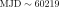
) أثناء الاندلاع (معرف البرنامج 16489؛ Castro Segura et al., 2020). استخدمنا محززات E230M مع تعريضين مدة كل منهما 200 s ثم 220 s عند الطولين الموجيين المركزيين 1978 Å و2707 Å على التوالي، لتغطية المنطقة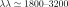
Å بقدرة فصل قدرها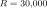
. اختُزلت البيانات باستخدام خط معالجة HST calstis66 6 مقدم من The Space Telescope Science Institute(https://github.com/spacetelescope).
3 النتائج
3.1 الراديو
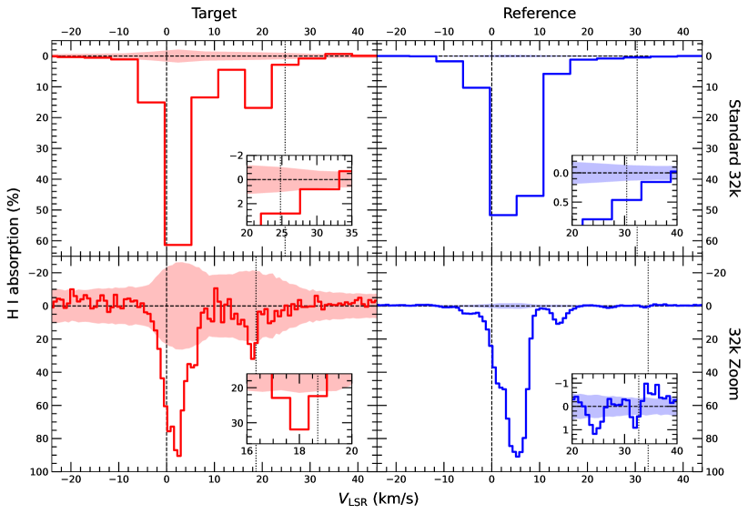
 ) خارج السرعات المختارة نطاقاً للمحور
) خارج السرعات المختارة نطاقاً للمحور 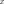
. يمثل المحور النسبة المئوية لامتصاص H i.
تشير الخطوط المتقطعة إلى أصلي المحورين
النسبة المئوية لامتصاص H i.
تشير الخطوط المتقطعة إلى أصلي المحورين  و
و .
وتشير الخطوط الرأسية المنقطة إلى السرعة العظمى التي يُرصد عندها امتصاص معنوي.
بالنسبة إلى J1727 ، تكون هذه السرعات
.
وتشير الخطوط الرأسية المنقطة إلى السرعة العظمى التي يُرصد عندها امتصاص معنوي.
بالنسبة إلى J1727 ، تكون هذه السرعات
 و
و
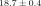
km s-1. وبالنسبة إلى J1733 ، تكون هذه السرعات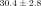
و km s-1.
المخطط العلوي الأيسر هو طيف 32k-S لـ J1727 من 14-10-2023، في حين أن المخطط السفلي الأيسر هو طيف J1727 المتوسط المرجح الناتج من دمج طيفي 32k-Z كليهما من الشكل 1.
ولدنا أطياف 32k-Z (32k-S) لـ J1733 من أرصاد بتاريخ 06-09-2023 (14-10-2023)، إذ قيسَت كثافة تدفق J1733 العظمى بقيمة
km s-1.
المخطط العلوي الأيسر هو طيف 32k-S لـ J1727 من 14-10-2023، في حين أن المخطط السفلي الأيسر هو طيف J1727 المتوسط المرجح الناتج من دمج طيفي 32k-Z كليهما من الشكل 1.
ولدنا أطياف 32k-Z (32k-S) لـ J1733 من أرصاد بتاريخ 06-09-2023 (14-10-2023)، إذ قيسَت كثافة تدفق J1733 العظمى بقيمة 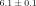
Jy (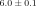
Jy)، مما وفر SNR أعلى بكثير مقارنة بأرصاد J1727.3.1.1 نمط التكبير 32k عالي الاستبانة
يُعرض طيفا H i من رصدينا بنمط 32k-Z في المخططين السفليين من الشكل 1. ويُرصد امتصاص H i معنوي ( ) نحو J1727 حتى سرعة LSR عظمى مقدرة قدرها
) نحو J1727 حتى سرعة LSR عظمى مقدرة قدرها
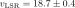
km s-1 كما هو مبين في الصورة الداخلية لطيف 32k-Z المتوسط المرجح في أسفل يسار الشكل 2، باستخدام نصف عرض الصندوق بوصفه لايقينية السرعة. ويُلاحظ أن الامتصاص الأقصى يبلغ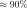
.3.1.2 النمط القياسي 32k
يظهر أثر اللمعانات المتغيرة لـ J1727 خلال فترة الأرصاد في اختلاف SNR بين طيفي H i من 27-08-2023 و14-10-2023 المعروضين في الشكل 1. بالنسبة إلى 14-10-2023، قسنا كثافة تدفق عظمى لـ J1727 تزيد بأكثر من ثمانية أضعاف على أي من رصدي 32k-Z لدينا، بسبب التوهج الراديوي كما رصده Miller-Jones et al. (2023a). ويُظهر طيف 14-10-2023 امتصاص H i عند سرعات أكبر من أطياف 32k-Z، وإن كان ذلك بعروض صناديق أكبر. لذلك نحدث تقديرنا للسرعة العظمى لامتصاص H i المعنوي نحو J1727 إلى
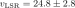
km s-1 كما يظهر في الصورة الداخلية العلوية اليسرى من الشكل 2. ويُلاحظ أن الامتصاص الأقصى يبلغ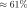
في أطياف 32k-S، وهو أصغر من نظيره في أطياف 32k-Z لأن الامتصاص يُوسَّط على عرض صندوق سرعة أوسع.3.1.3 المصدر المرجعي
يقارن الشكل 2 أطياف امتصاص H i نحو J1727 وJ1733.
ويكون الأخير أكثر سطوعاً بكثير على نحو ثابت، مع كثافات تدفق تتجاوز 6 Jy.
كما يُظهر امتصاص H i حتى سرعات أكبر (أي  km s-1 في طيف 32k-Z)، وهو ما يتسق مع كون J1733 خارج مجري.
ومع توفر نقطة مقارنة خارج مجرية قريبة من حيث الموقع السماوي وتُظهر امتصاص H i حتى سرعات أكبر، نستنتج أن J1727 أقرب من نقطة التماس، ونستخدم المسافة الحركية القريبة حداً أدنى.
km s-1 في طيف 32k-Z)، وهو ما يتسق مع كون J1733 خارج مجري.
ومع توفر نقطة مقارنة خارج مجرية قريبة من حيث الموقع السماوي وتُظهر امتصاص H i حتى سرعات أكبر، نستنتج أن J1727 أقرب من نقطة التماس، ونستخدم المسافة الحركية القريبة حداً أدنى.
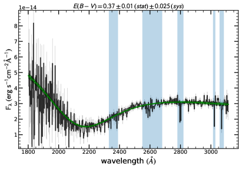
3.2 الأشعة فوق البنفسجية القريبة
حددنا الانطفاء على خط النظر إلى J1727 باستخدام قانون الاحمرار لدى Cardelli et al. (1989) لملاءمة قانون قدرة محمر يمثل قرص التراكم الخارجي مع طيف الأشعة فوق البنفسجية القريبة كما هو معروض في الشكل 3. ولتقدير الأخطاء أجرينا محاكاة مونت كارلو أسفرت عن ، وهو ما يقابل
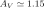
وفق المعادلة 2 مع .
وبما أننا نستخدم أقدار حزمة
.
وبما أننا نستخدم أقدار حزمة  عند حساب المعادلة 1، فإننا نشتق الانطفاء في حزمة
عند حساب المعادلة 1، فإننا نشتق الانطفاء في حزمة  باستخدام (لـ Pan-STARRS1؛ Schlafly and Finkbeiner, 2011).
باستخدام (لـ Pan-STARRS1؛ Schlafly and Finkbeiner, 2011).
4 المناقشة
4.1 قيد المسافة الحركية
استرشد استخدامنا لأداة KDCT لتوليد تقديرات المسافة الحركية بسمات الامتصاص في أطياف H i النهائية. ونرصد بوضوح سرعات أكبر نحو J1733 مقارنة بـ J1727 ، كما يبين الشكل 2.
استخدمنا سرعة امتصاص H i العظمى ولايقينيتها مدخلاتٍ إلى KDCT (Wenger et al., 2018)، باستعمال طريقتهم C وتطبيق معلمات الحركة الشمسية المنقحة من Reid et al. (2014b) ومنحنى الدوران من Reid et al. (2019). وتشمل لايقينية سرعة LSR الكلية المنقحة لايقينيات القياس واللايقينيات المنهجية، مثل حركات الجريان غير الدائرية.
عدلنا الشفرة المصدرية لـ KDCT لإعادة أخذ عينات من المدخلات ومعلمات منحنى دوران المجرة  مرة بغية تقليل خطأ مونت كارلو.
وتشمل النتائج عينات مونت كارلو من
مرة بغية تقليل خطأ مونت كارلو.
وتشمل النتائج عينات مونت كارلو من
 ,
,
 (المسافة الحركية إلى نقطة التماس)، و
(المسافة الحركية إلى نقطة التماس)، و
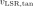
(سرعة LSR عند نقطة التماس). ونقدر قيم الوسيط ونوردها بوصفها أفضل التقديرات، وحدود أعلى فاصل كثافة بنسبة 68% بوصفها لايقينيات هذه الكميات. كررنا هذه العملية باستخدام مدخلات من أطياف امتصاص H i بنمطي 32k-Z و32k-S.تعتمد الكميتان
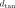
و على موقع المصدر فقط.
لذلك نقدر لـ J1727 القيمتين kpc و km s-1.
وبما أن
على موقع المصدر فقط.
لذلك نقدر لـ J1727 القيمتين kpc و km s-1.
وبما أن 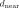
يعتمد على السرعة المدخلة، نستخدم نتيجتنا الأعلى من حيث SNR، وهي km s-1 من أطياف 32k-S، لتقدير kpc.
km s-1 من أطياف 32k-S، لتقدير kpc.
4.1.1 محاذير
يمتلك J1727 خط طول قريباً من مركز المجرة (GC) وعرضاً مجرياً عالياً نسبياً، مما يؤدي إلى لايقينيات منهجية أكبر في المسافة الحركية.
تتميز المناطق الواقعة ضمن
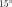
في خط الطول المجري من GC بزيادة انبعاث H i من GC (Kalberla and Kerp, 2009)، مما يؤدي إلى درجات حرارة سماوية أعلى حول خط H i ومن ثم إلى زيادة اللايقينية في كل قناة طيفية. وعند خطوط الطول هذه، تكون حركة الأجسام التي يقطعها خط النظر عمودية في معظمها على خط النظر. لذلك تُستنتج المسافات من انتشار أصغر في سرعات الدوران الدائرية وتخضع للايقينيات أكبر، ولهذا استُبعدت هذه المنطقة من دراسة Wenger et al. (2018).وفي الآونة الأخيرة، أجرى Hunter et al. (2024) محاكاة هيدروديناميكية عددية 2D لمراعاة الأسباب المحتملة لانحرافات درب التبانة عن التناظر المحوري وانحرافات سحب الغاز عن منحنى الدوران الدائري. ويصنف المؤلفون هذه الانحرافات إلى: (i) تقلبات عشوائية حول حركات الجريان المتوسطة لا تغير السرعة المتوسطة؛ و(ii) تغيرات منهجية في سرعة الجريان بسبب اللاتناظر المحوري، مثل الأذرع الحلزونية والقضيب المجري. ثم يحدد المؤلفون مناطق في مجرة درب التبانة المحاكاة لديهم يكون فيها التباين بين المسافة الحركية والمسافة الحقيقية معنوياً (
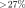
). وضمن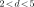
kpc، يبدو أن خط طول J1727 يقابل وسيط خطأ نسبي مطلق في المسافة الحركية قدره . أما عند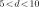
kpc، فينخفض هذا الخطأ إلى نحو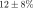
. ونستخدم الخطأ الأكبر أعلاه، البالغ 63%، لتوسيع لايقينية في مسافتنا الحركية المقيسة، فتصبح kpc.
في مسافتنا الحركية المقيسة، فتصبح kpc.
نلاحظ أن التغيرات الطفيفة في خطوط الطول المجرية القريبة من GC لها آثار كبيرة في قيم  المحسوبة باستخدام KDCT.
وتحديداً، يمتلك J1733 سرعة امتصاص H i عظمى أكبر بأكثر من 30% من سرعة J1727 ، غير أن خط طوله المجري الأكبر،
المحسوبة باستخدام KDCT.
وتحديداً، يمتلك J1733 سرعة امتصاص H i عظمى أكبر بأكثر من 30% من سرعة J1727 ، غير أن خط طوله المجري الأكبر،
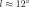
، يؤدي إلى قيمة متنبأ بها مشابهة لـ .
.
لذلك قد يكون حدنا الأدنى المحافظ البالغ kpc، بعد مراعاة آثار خط الطول، معقولاً بالنظر إلى العرض المجري العالي لـ J1727 ومن ثم تناقص كثافة H i على امتداد خطي النظر نحو J1727 وJ1733.
4.1.2 ارتفاع مقياس H I المجري
تعمل طريقة المسافة الحركية على أفضل نحو للمصادر الواقعة في مستوى المجرة حيث
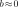
. افترض Wenger et al. (2018) عرضاً قدره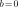
ولا يستخدمون العرض إلا لتصحيح سرعة LSR بمعلمات الحركة الشمسية المحدثة. وباستخدام محاكاة 2D، افترض Hunter et al. (2024) أن الغاز مدمج على امتداد المحور (رأسياً)، وأن تسارع الغاز بفعل الجهد المجري يُحسب كما لو كان الغاز يقع في مستوى المجرة مع ارتفاع مجري،
(رأسياً)، وأن تسارع الغاز بفعل الجهد المجري يُحسب كما لو كان الغاز يقع في مستوى المجرة مع ارتفاع مجري،  ، يساوي صفراً.
وتقابل العروض المجرية العالية ارتفاعات مجرية أكبر توجد فيها كميات أقل من الغاز والمادة الأخرى.
وتعود سمات الامتصاص المرصودة أساساً إلى السحب الغازية الأقرب إلينا، كما يدل على ذلك غياب امتصاص H i القابل للكشف حتى نقطة التماس باتجاه J1733.
لذلك فإن أثر العرض المجري لـ J1727 سيؤدي، إن أدى إلى شيء، إلى التقليل من تقدير المسافة.
، يساوي صفراً.
وتقابل العروض المجرية العالية ارتفاعات مجرية أكبر توجد فيها كميات أقل من الغاز والمادة الأخرى.
وتعود سمات الامتصاص المرصودة أساساً إلى السحب الغازية الأقرب إلينا، كما يدل على ذلك غياب امتصاص H i القابل للكشف حتى نقطة التماس باتجاه J1733.
لذلك فإن أثر العرض المجري لـ J1727 سيؤدي، إن أدى إلى شيء، إلى التقليل من تقدير المسافة.
لا نرصد امتصاص H i حتى سرعة نقطة التماس البالغة km s-1 في أي من أطيافنا؛ بل فقط حتى سرعة عظمى قدرها km s-1 في اتجاه J1733.
ويشير ذلك إلى أن خط النظر لم يقطع سحب H i عند مسافات أكبر بسبب ازدياد  وتناقص كثافة H i مع المسافة.
ويقابل الحد الأدنى للمسافة البالغ kpc ارتفاعاً عن مستوى المجرة قدره pc.
وتناقص كثافة H i مع المسافة.
ويقابل الحد الأدنى للمسافة البالغ kpc ارتفاعاً عن مستوى المجرة قدره pc.
يقترح Kalberla and Kerp (2009) أن ارتفاع مقياس قرص H i في درب التبانة يبلغ نحو 150 pc عند .
ولا يتوقع أن يكون اتساع قرص H i والتواؤه اللذان ناقشهما المؤلفون مهمين عند موقع J1727 ، لأنه يقع داخل الدائرة الشمسية.
وفي الآونة الأخيرة، بيّن Rybarczyk et al. (2024) أن سماكة الوسط المتعادل البارد في الجوار الشمسي، الموزعة غاوسياً، ، لا تتجاوز pc.
لذلك يمكن توقع أن غالبية سحب H i على امتداد خطوط النظر نحو مصادرنا ستكون محصورة ضمن بضعة أمثال لهذه القيمة  .
كما وجد Rybarczyk et al. (2024) أن سمات H i عند تتتبع أساساً بنى محلية ضمن 2 kpc.
ومن الشكل 7 لديهم، نرى أن امتصاص H i الأقصى الذي رصدناه نحو J1727 وJ1733 يقع في منطقة قيم شاذة في فضاء الموضع-السرعة المجري، مما يعزز وجاهة قرارنا فرض لايقينية إضافية على الحد الأدنى لمسافتنا الحركية.
.
كما وجد Rybarczyk et al. (2024) أن سمات H i عند تتتبع أساساً بنى محلية ضمن 2 kpc.
ومن الشكل 7 لديهم، نرى أن امتصاص H i الأقصى الذي رصدناه نحو J1727 وJ1733 يقع في منطقة قيم شاذة في فضاء الموضع-السرعة المجري، مما يعزز وجاهة قرارنا فرض لايقينية إضافية على الحد الأدنى لمسافتنا الحركية.
4.1.3 جدوى مسافات ثنائيات الأشعة السينية المستندة إلى امتصاص H I
وبالنظر إلى القيود التي أمكن الحصول عليها من عدد صغير من أرصاد ثنائيات الأشعة السينية باستخدام MeerKAT، تمتلك المسافات الحركية عبر دراسات امتصاص H i القدرة على أن تشكل أساس طريقة سريعة وروتينية ومعقولة الدقة لوضع حدود مفيدة لمسافات العابر المجرية، ولا سيما تلك الواقعة داخل مستوى المجرة و/أو الأبعد عن مركز المجرة من J1727. وستزداد قوة هذه الطريقة عند استخدامها بالاقتران مع أرصاد مصفوفة الكيلومتر المربع لثنائيات الأشعة السينية الساطعة بما يكفي أثناء الاندلاع، وإن كان ذلك مع المحاذير التي نوقشت أعلاه.
4.2 قيد المسافة المستند إلى
4.2.1 التحقق من
للتحقق أولاً من نتيجتنا المستمدة من أرصاد الأشعة فوق البنفسجية القريبة في القسم 3.2، نحسب تغير على امتداد خط النظر إلى J1727 باستخدام خرائط الغبار المجرية. ونعرض هذه النتائج في الشكل 4. وتدل نتائجنا على أن لا يمكن أن يكون أكبر بكثير من 0.4، إذ ينفد الغبار على امتداد خط النظر (مع ملاحظة أن الاستبانة المكانية لخرائط الغبار قد تكون عاملاً محدداً). وفي الواقع، فإن أفضل قيمة لدينا لـ أقل من جميع القيم التي قدرها MS24.
 ، وهي مضافة للمرجعية (الخط البرتقالي المنقط-المتقطع والمنطقة المظللة على التوالي).
، وهي مضافة للمرجعية (الخط البرتقالي المنقط-المتقطع والمنطقة المظللة على التوالي).
نلاحظ أنه على الرغم من عدم وجود دليل على تغير ذاتي في ، فقد تراوحت القيم المستخدمة في دراسات J1727 من حد منخفض قدره (Chatterjee et al., 2024) إلى حد عال قدره (Draghis et al., 2023)، مع قيم أخرى بينهما (O’Connor et al., 2023; Peng et al., 2024; Svoboda et al., 2024). ويرجح أن تعود هذه الفروق إلى المنهجيات الجهازية و/أو اختيارات النمذجة التي تختلف من دراسة إلى أخرى.
استخدم MS24 القيمة ، المشتقة بوصفها متوسط قيمة من O’Connor et al. (2023) وDraghis et al. (2023). وقد قُدرت الأخيرة باستخدام نموذج امتصاص الأشعة السينية tbabs ووفرة العناصر لدى Wilms et al. (2000). واشتُقت القيمتان بملاءمة أرصاد أُجريت في أواخر أغسطس 2023، عندما كان المصدر في الحالة الصلبة/الصلبة-المتوسطة الصاعدة.
ونستخدم بدلاً من ذلك وفق Svoboda et al. (2024)، وهي قيمة اشتُقت باستخدام أرصاد NICER وNuSTAR وIXPE التي أُجريت أثناء الحالة اللينة. وتتيح التغطية الطيفية الواسعة لهذه المجموعة من البيانات وطيف الجسم الأسود القرصي الموصوف جيداً أثناء الحالة اللينة تقديراً أكثر متانة لـ من القيم المشتقة من نطاق تمرير أكثر تقييداً أو المحسوبة أثناء الحالات الصلبة أو المتوسطة. وتتفق هذه القيمة مع المقيس في مسح HI4PI في اتجاه J1727 (HI4PI Collaboration et al., 2016)، وتتفق اتفاقاً معقولاً مع قيم التي قدمها Chatterjee et al. (2024) وPeng et al. (2024).
ونستخدم أيضاً علاقة بديلة، (Zhu et al., 2017, المعادلة 11)، بدلاً من علاقة Güver and Özel (2009). وهذه العلاقة الأحدث خيار أنسب لتقدير الانطفاء، نظراً إلى أنها حُددت بملاءمة العينة الكاملة من وفرات Wilms et al. (2000)، التي تشمل ثنائيات الأشعة السينية. غير أننا نلاحظ أن هناك على الأرجح لايقينية إضافية بسبب التشتت المرصود في هذه العلاقة (Zhu et al., 2017, الشكل 9(a)). وبافتراض ، نستخدم تقنيات مونت كارلو والمعادلة 2 لتقدير بدلاً من ذلك على امتداد خط النظر إلى J1727. وتتفق هذه النتيجة، على الرغم من اعتمادها على اختيار وارتباطها على الأرجح بلايقينية أكبر، مع استنتاجاتنا المستندة إلى بيانات الأشعة فوق البنفسجية القريبة وخرائط الغبار المجرية بأن .
4.2.2 المسافة المقترحة إلى Swift J1727.8−1613
مع وفق القسم 3.2، تكون قيم المعلمات المتبقية المطلوبة للمعادلة 1 هي القدران المطلق والظاهري في حزمة  ، أي و على التوالي.
حدد MS25 نوع النجم المانح بأنه K4(
، أي و على التوالي.
حدد MS25 نوع النجم المانح بأنه K4( 1)V مع mag و mag.
وينتج من استخدام هذه القيم التوزيع اللاحق للمسافة الذي نعرضه في الشكل 5 وتقدير للمسافة قدره kpc، على افتراض أن النجم المانح نجم عادي من النوع K4(
1)V مع mag و mag.
وينتج من استخدام هذه القيم التوزيع اللاحق للمسافة الذي نعرضه في الشكل 5 وتقدير للمسافة قدره kpc، على افتراض أن النجم المانح نجم عادي من النوع K4( 1)V لم يفقد كتلة كبيرة أثناء تطور الثنائي.
وفي مثل هذه الحالة، ستنخفض المسافة، مما يقتضي قيماً أصغر لـ و.
1)V لم يفقد كتلة كبيرة أثناء تطور الثنائي.
وفي مثل هذه الحالة، ستنخفض المسافة، مما يقتضي قيماً أصغر لـ و.
4.2.3 طبيعة النجم المانح
وباستخدام تقديرنا للمسافة ونتائج Wood et al. (2025)، نحدد حداً أعلى لزاوية الميل،  ، لـ J1727 قدره .
ولتحديد حد أدنى محافظ لـ
، لـ J1727 قدره .
ولتحديد حد أدنى محافظ لـ  ، نفترض حداً أعلى لكتلة الثقب الأسود قدره .
ومن المرجح أن يكون الثقب الأسود في الواقع أصغر بكثير، كما نناقش بالإشارة إلى سرعة الركلة الولادية العالية في القسم 4.3.
ونستخدم أيضاً توزيعاً طبيعياً ملتوياً ذا إنتروبيا عظمى لكتلة النجم المانح من النوع K4(
، نفترض حداً أعلى لكتلة الثقب الأسود قدره .
ومن المرجح أن يكون الثقب الأسود في الواقع أصغر بكثير، كما نناقش بالإشارة إلى سرعة الركلة الولادية العالية في القسم 4.3.
ونستخدم أيضاً توزيعاً طبيعياً ملتوياً ذا إنتروبيا عظمى لكتلة النجم المانح من النوع K4( 1)V بحيث يقع
1)V بحيث يقع  ضمن النطاق بين و.
وتتيح لنا قيم الكتلة هذه استخدام دالة الكتلة التي قدمها MS25 ،
ضمن النطاق بين و.
وتتيح لنا قيم الكتلة هذه استخدام دالة الكتلة التي قدمها MS25 ،
| (3) |
لتقدير حد أدنى لـ  قدره .
قدره .
حصل MS25 على حد أعلى قدره km s-1 للتعريض الدوراني للنجم المانح، لكنهم يوصون بحد أعلى أكثر محافظة عند  قدره km s-1 لأن هذا القيد ليس قوياً على نحو خاص.
لذلك فإن قيماً تبلغ km s-1 غير مرجحة، وستتطلب .
قدره km s-1 لأن هذا القيد ليس قوياً على نحو خاص.
لذلك فإن قيماً تبلغ km s-1 غير مرجحة، وستتطلب .
وبالنظر إلى الفترة المدارية للنظام الثنائي، ، وافتراض أن النجم المانح مقفل مدياً، يمكن حساب نصف قطر النجم المانح كما يلي
| (4) |
قاس MS25 مباشرة hrs.
وينتج من دمج ذلك مع التوزيع اللاحق لـ km s-1 من MS25 وتوزيع منتظم لـ توزيع لـ حيث ، في حين أن نجوم K4( 1)V لها عادة أنصاف أقطار قدرها .
1)V لها عادة أنصاف أقطار قدرها .
يربط Paczyński (1967) بين الفترة المدارية لثنائي الأشعة السينية وكتلة ونصف قطر نجم مانح يمر بفيض فص روش كما يلي
| (5) |
حيث إن هو نصف قطر فص روش، و هي كتلة النجم المانح (الثانوي).
وأخذ كما هو مشتق باستخدام التوزيع اللاحق لـ
هي كتلة النجم المانح (الثانوي).
وأخذ كما هو مشتق باستخدام التوزيع اللاحق لـ  من MS25 ينتج توزيعاً لـ
من MS25 ينتج توزيعاً لـ  يفضل أيضاً قيماً صغيرة جداً وغير فيزيائية ().
يفضل أيضاً قيماً صغيرة جداً وغير فيزيائية ().
قد تكون النجوم المانحة في ثنائيات الأشعة السينية منخفضة الكتلة ذات الثقوب السوداء متطورة بدرجة كبيرة (Podsiadlowski et al., 2003; Fragos and McClintock, 2015) وفي حالة فيض فص روش. غير أنه لا يوجد حالياً دليل من التحليل الطيفي للنجم المانح الذي أجراه MS25 على أنه متطور أو مجرّد بدرجة كبيرة، وهو ما سيؤثر في تقدير المسافة. ولا يمكننا الحصول على معلومات إضافية عن طبيعة النجم المانح في J1727 إلا عبر أرصاد طيفية مستقبلية أعلى استبانة.
لذلك نستنتج أن من غير المرجح أن تكون منخفضة بالقدر الذي قد يوحي به التوزيع اللاحق لدى MS25.
وبافتراض الدوران المشترك وفيض فص روش، نجمع مرة أخرى المعادلتين 4 و5.
ثم باستخدام من MS25 والتوزيعين المذكورين آنفاً، التوزيع الطبيعي الملتوي لـ والتوزيع المنتظم لـ ، نحسب  ضمن نطاق
ضمن نطاق  البالغ km s-1.
وهذا متسق تقريباً مع حد MS25 الأعلى عند
البالغ km s-1.
وهذا متسق تقريباً مع حد MS25 الأعلى عند  والبالغ km s-1 ، نظراً إلى اعتماده على حدود محافظة لـ
والبالغ km s-1 ، نظراً إلى اعتماده على حدود محافظة لـ  ، كما أنه يناقض أكثر وفرة القيم المنخفضة في التوزيع اللاحق لـ
، كما أنه يناقض أكثر وفرة القيم المنخفضة في التوزيع اللاحق لـ  لدى MS25.
لدى MS25.
4.3 التبعات
4.3.1 سرعة الركلة الولادية وآلية التكوّن
باستخدام تقديرهم للمسافة البالغ kpc، إلى جانب الحركة الذاتية لـ J1727 ، اشتق MS25 وسيطاً ومستوى ثقة  لسرعة الركلة الولادية المحتملة قدرهما km s-1.
نستخدم المسافة التي نقترحها، kpc، لتقديم سرعة ركلة ولادية محدثة قدرها km s-1 (Atri et al., 2019)77
7
https://github.com/pikkyatri/BHnatalkicks.
وتقابل مسافتنا المنقحة أيضاً ارتفاعات مجرية مقدارها kpc.
ويمكننا مقارنة ذلك بـ XTE J1118+480، الذي قدم له Gualandris et al. (2005) ركلة ولادية غير متناظرة بسرعة مشابهة قدرها km s-1 وارتفاع مجري قدره kpc.
وقدّر Atri et al. (2019) سرعة ركلة ولادية مشابهة لـ XTE J1118+480، وركلات ذات سرعات عالية على نحو خاص لأنظمة أخرى، مثل 4U 1543−475 وGS 1354−64 وSAX J1819.3−2525، واقترح أن هذه تشير إلى انفجارات مستعرات عظمى غير متناظرة بوصفها آلية التكوّن المرجحة.
وبتطبيق ذلك على J1727 ، فمن الممكن أن يكون قد تكوّن داخل القرص المجري، ثم دفعته ركلة ولادية إلى ارتفاعه المجري الحالي. ومن الممكن أيضاً أن تكون الركلة الولادية الكبيرة قد سببت سوء اصطفاف بين دوران BH وقرص التراكم في J1727 (Maccarone, 2002; Martin et al., 2008). غير أنه لم يُرصد حتى الآن أي دليل على ترنح محور النفاثة (Wood et al., 2024, 2025).
لسرعة الركلة الولادية المحتملة قدرهما km s-1.
نستخدم المسافة التي نقترحها، kpc، لتقديم سرعة ركلة ولادية محدثة قدرها km s-1 (Atri et al., 2019)77
7
https://github.com/pikkyatri/BHnatalkicks.
وتقابل مسافتنا المنقحة أيضاً ارتفاعات مجرية مقدارها kpc.
ويمكننا مقارنة ذلك بـ XTE J1118+480، الذي قدم له Gualandris et al. (2005) ركلة ولادية غير متناظرة بسرعة مشابهة قدرها km s-1 وارتفاع مجري قدره kpc.
وقدّر Atri et al. (2019) سرعة ركلة ولادية مشابهة لـ XTE J1118+480، وركلات ذات سرعات عالية على نحو خاص لأنظمة أخرى، مثل 4U 1543−475 وGS 1354−64 وSAX J1819.3−2525، واقترح أن هذه تشير إلى انفجارات مستعرات عظمى غير متناظرة بوصفها آلية التكوّن المرجحة.
وبتطبيق ذلك على J1727 ، فمن الممكن أن يكون قد تكوّن داخل القرص المجري، ثم دفعته ركلة ولادية إلى ارتفاعه المجري الحالي. ومن الممكن أيضاً أن تكون الركلة الولادية الكبيرة قد سببت سوء اصطفاف بين دوران BH وقرص التراكم في J1727 (Maccarone, 2002; Martin et al., 2008). غير أنه لم يُرصد حتى الآن أي دليل على ترنح محور النفاثة (Wood et al., 2024, 2025).
4.3.2 نسبة لمعان إدنغتون
يحسب Zdziarski et al. (2025) تدفقاً بولومترياً غير ممتص قدره لـ J1727 ، استناداً إلى ذروة تدفق الحالة الصلبة من Liu et al. (2024).
وعند مسافة قدرها kpc، سيقابل ذلك لمعاناً قدره .
وبافتراض كتلة اسمية لـ BH قدرها  ، يكون ، أي إن ELF تساوي في هذه الحالة.
ومن المتوقع أن تكون الثقوب السوداء ذات الركلات الولادية المتوقعة الأعلى أقل كتلة (مثلاً؛ Belczynski and Bulik, 2002; Maccarone et al., 2020)، غير أن خفض كتلة BH لن يؤدي إلا إلى زيادة هذه القيمة الكبيرة أصلاً لـ ELF.
لذلك فإن أي مسافة ضمن لايقينياتنا
، يكون ، أي إن ELF تساوي في هذه الحالة.
ومن المتوقع أن تكون الثقوب السوداء ذات الركلات الولادية المتوقعة الأعلى أقل كتلة (مثلاً؛ Belczynski and Bulik, 2002; Maccarone et al., 2020)، غير أن خفض كتلة BH لن يؤدي إلا إلى زيادة هذه القيمة الكبيرة أصلاً لـ ELF.
لذلك فإن أي مسافة ضمن لايقينياتنا  لـ kpc ستخالف توقعات Zdziarski et al. (2025)، الذين يلاحظون أن أعلى اللمعانات المرصودة لثنائيات الأشعة السينية منخفضة الكتلة في الحالات الصلبة أو الصلبة-المتوسطة تقع في المجال .
كما لاحظ Zdziarski et al. (2025) أن J1727 شهد انتقالاً من الحالة اللينة إلى الصلبة عند تدفق منخفض جداً في الفترة فبراير–أبريل 2024، عند .
ومع هذا التدفق، تقابل المسافة نفسها لدينا قيمة ELF لانتقال الحالة من اللينة إلى الصلبة قدرها بافتراض كتلة BH قدرها ، وهي أكثر اتساقاً مع التوقعات البالغة (Kalemci et al., 2013; Vahdat Motlagh et al., 2019).
وتدل قيم ELF هذه على أن المسافة إلى J1727 تقع على الأرجح عند الطرف الأدنى من نطاقنا .
غير أنه لا توجد مسافة واحدة يمكنها تحقيق التوقعات لكل من ذروة لمعان الحالة الصلبة ولمعان انتقال الحالة من اللينة إلى الصلبة.
وعلى الرغم من أن قيم ELF المستمدة من انتقالات الحالة من اللينة إلى الصلبة تبدو أكثر ثباتاً (Kalemci et al., 2013)، فإننا ننبه إلى أن قيمتي ELF المذكورتين أعلاه ليستا سوى دلاليتين ومن غير المرجح أن تكونا موثوقتين من دون قيد أدق على كتلة BH.
لـ kpc ستخالف توقعات Zdziarski et al. (2025)، الذين يلاحظون أن أعلى اللمعانات المرصودة لثنائيات الأشعة السينية منخفضة الكتلة في الحالات الصلبة أو الصلبة-المتوسطة تقع في المجال .
كما لاحظ Zdziarski et al. (2025) أن J1727 شهد انتقالاً من الحالة اللينة إلى الصلبة عند تدفق منخفض جداً في الفترة فبراير–أبريل 2024، عند .
ومع هذا التدفق، تقابل المسافة نفسها لدينا قيمة ELF لانتقال الحالة من اللينة إلى الصلبة قدرها بافتراض كتلة BH قدرها ، وهي أكثر اتساقاً مع التوقعات البالغة (Kalemci et al., 2013; Vahdat Motlagh et al., 2019).
وتدل قيم ELF هذه على أن المسافة إلى J1727 تقع على الأرجح عند الطرف الأدنى من نطاقنا .
غير أنه لا توجد مسافة واحدة يمكنها تحقيق التوقعات لكل من ذروة لمعان الحالة الصلبة ولمعان انتقال الحالة من اللينة إلى الصلبة.
وعلى الرغم من أن قيم ELF المستمدة من انتقالات الحالة من اللينة إلى الصلبة تبدو أكثر ثباتاً (Kalemci et al., 2013)، فإننا ننبه إلى أن قيمتي ELF المذكورتين أعلاه ليستا سوى دلاليتين ومن غير المرجح أن تكونا موثوقتين من دون قيد أدق على كتلة BH.
5 الاستنتاجات
باستخدام بيانات امتصاص H i من أرصاد MeerKAT لاندلاع Swift J1727.8−1613 ، نحدد سرعة امتصاص عظمى قدرها  km s-1.
ويتيح لنا الامتصاص الأعلى سرعة المرصود باتجاه المصدر المرجعي خارج المجري PKS J1733−1304 استخدام المسافة الحركية القريبة حداً أدنى قدره kpc، مع احتساب اللايقينية المنهجية الناجمة عن انخفاض خط الطول المجري للمصدر.
غير أن عرضه المجري العالي يرجح أن سحب H i تنفد على امتداد خط النظر.
km s-1.
ويتيح لنا الامتصاص الأعلى سرعة المرصود باتجاه المصدر المرجعي خارج المجري PKS J1733−1304 استخدام المسافة الحركية القريبة حداً أدنى قدره kpc، مع احتساب اللايقينية المنهجية الناجمة عن انخفاض خط الطول المجري للمصدر.
غير أن عرضه المجري العالي يرجح أن سحب H i تنفد على امتداد خط النظر.
وبالاستفادة من طيف الأشعة فوق البنفسجية القريبة لـ Swift J1727.8−1613 كما رصده مطياف التصوير الفضائي على متن تلسكوب هابل الفضائي، نقيس فائض اللون أو الاحمرار فنجد أنه . وهذه القيمة أقل بكثير من القيود السابقة على لدى Mata Sánchez et al. (2024, 2025)، لكنها تتفق جيداً مع القيمة العظمى المشتقة من خرائط الغبار المجرية على امتداد خط النظر هذا.
نستخدم لتحديد الانطفاء في حزمة  ، ، ونضم ذلك إلى أقدار النجم المانح في حزمة
، ، ونضم ذلك إلى أقدار النجم المانح في حزمة  التي قدمها Mata Sánchez et al. (2025) لنجم مانح من النسق الرئيسي من النوع K4(
التي قدمها Mata Sánchez et al. (2025) لنجم مانح من النسق الرئيسي من النوع K4( 1)V.
وبموجب هذا الافتراض، نقدم لاحقاً kpc بوصفها المسافة الناتجة والمرجحة إلى Swift J1727.8−1613 ، وهي تقتضي سرعة ركلة ولادية قدرها km s-1 وتشير إلى تكوّن مرجح في مستعر أعظم ولادي.
1)V.
وبموجب هذا الافتراض، نقدم لاحقاً kpc بوصفها المسافة الناتجة والمرجحة إلى Swift J1727.8−1613 ، وهي تقتضي سرعة ركلة ولادية قدرها km s-1 وتشير إلى تكوّن مرجح في مستعر أعظم ولادي.
أما إذا كان النجم المانح قد فقد بدلاً من ذلك كتلة كبيرة أثناء تطور الثنائي، فستكون هذه المسافة أصغر. غير أن المرحلة التطورية الدقيقة للنجم المانح واحتمال فقدانه كتلة بفعل التراكم غير معروفين. وستتيح أرصاد إضافية لتقييد زاوية ميل الثنائي والتعريض الدوراني للنجم المانح على نحو أفضل تحديداً أدق لكتلتي الابتدائي والثانوي، وبالتالي للمسافة.
شكر وتقدير
يود المؤلفون أن يشكروا James Allison على تطويره خط معالجة ThunderKAT H i Pipeline.
كما يود المؤلفون شكر Ilya Mandel وRyosuke Hirai وNatasha Ivanova وThomas Maccarone على النقاشات المفيدة.
يشغل تلسكوب MeerKAT المرصد الجنوب أفريقي لعلم الفلك الراديوي، وهو مرفق تابع لمؤسسة الأبحاث الوطنية، وهي وكالة تابعة لإدارة العلوم والتكنولوجيا والابتكار.
نقر باستخدام مرفق الحوسبة السحابية ilifu – www.ilifu.ac.za، وهو شراكة بين University of Cape Town وUniversity of the Western Cape وStellenbosch University وSol Plaatje University وCape Peninsula University of Technology. ويدعم مرفق ilifu إسهامات من Inter-University Institute for Data Intensive Astronomy (IDIA – شراكة بين University of Cape Town وUniversity of Pretoria وUniversity of the Western Cape)، وقسم Computational Biology في UCT، وData Intensive Research Initiative of South Africa (DIRISA).
استفاد هذا العمل من برمجية CARTA (Cube Analysis and Rendering Tool for Astronomy) (Comrie et al. 2024 – https://cartavis.github.io).
يستند هذا البحث إلى أرصاد أُجريت بتلسكوب NASA/ESA Hubble Space Telescope، وحُصل عليها من Space Telescope Science Institute الذي تديره Association of Universities for Research in Astronomy, Inc. بموجب عقد NASA رقم NAS 5–26555. وترتبط هذه الأرصاد بالبرنامج 16489.
يقر Noel Castro Segura بالدعم المقدم من منحة Science and Technology Facilities Council (STFC) رقم ST/X001121/1.
يقر Andrzej Zdziarski بالدعم المقدم من منح Polish National Science Center رقم 2019/35/B/ST9/03944 و2023/48/Q/ST9/00138.
يقر Daniel Mata Sánchez بالدعم عبر زمالة Ramón y Cajal RYC2023-044941.
.
References
- A dependable distance estimator to black hole low-mass X-ray binaries. MNRAS 530 (1), pp. 424–445. External Links: Document, 2401.03654 Cited by: §1.1.2, §1.2.1.
- PyMC: a modern, and comprehensive probabilistic programming framework in Python. PeerJ Computer Science 9, pp. e1516. External Links: Document Cited by: حول المسافة إلى ثنائي الأشعة السينية ذي الثقب الأسود Swift J1727.8−1613.
- Distances to Galactic X-ray binaries with Gaia DR2. MNRAS 502 (4), pp. 5455–5470. External Links: Document, 2102.02615 Cited by: §1.1.1.
- The Astropy Project: Sustaining and Growing a Community-oriented Open-source Project and the Latest Major Release (v5.0) of the Core Package. ApJ 935 (2), pp. 167. External Links: Document, 2206.14220 Cited by: حول المسافة إلى ثنائي الأشعة السينية ذي الثقب الأسود Swift J1727.81613.
- A radio parallax to the black hole X-ray binary MAXI J1820+070. MNRAS 493 (1), pp. L81–L86. External Links: Document, 1912.04525 Cited by: §1.1.1.
- Potential kick velocity distribution of black hole X-ray binaries and implications for natal kicks. MNRAS 489 (3), pp. 3116–3134. External Links: Document, 1908.07199 Cited by: §1.1.1, §4.3.1.
- Lord of the Rings - Return of the King: Swift-XRT observations of dust scattering rings around V404 Cygni. MNRAS 462 (2), pp. 1847–1863. External Links: Document Cited by: §1.1.3.
- Formation and Evolution of Microquasar GRS 1915+105. ApJ 574 (2), pp. L147–L150. External Links: Document, astro-ph/0205248 Cited by: §4.3.2.
- Allen Telescope Array Detection of the black hole candidate Swift J1727.8-1613. The Astronomer’s Telegram 16228, pp. 1. External Links: Link Cited by: §1.2.
- African star joins the radio astronomy firmament. Nature Astronomy 2, pp. 594–594. External Links: Document Cited by: §2.1.
- The Relationship between Infrared, Optical, and Ultraviolet Extinction. ApJ 345, pp. 245. External Links: Document Cited by: §3.2.
- CASA, the Common Astronomy Software Applications for Radio Astronomy. PASP 134 (1041), pp. 114501. External Links: Document, 2210.02276 Cited by: حول المسافة إلى ثنائي الأشعة السينية ذي الثقب الأسود Swift J1727.81613, §2.1.2.
- Outflow Legacy Accretion Survey: unveiling the wind driving mechanism in BHXRBs. Note: HST Proposal. Cycle 28, ID. #16489 Cited by: §2.2.
- Optical spectroscopy of Swift J1727.8-1613 confirms a new low-mass X-ray binary hosting a black hole candidate. The Astronomer’s Telegram 16208, pp. 1. External Links: Link Cited by: §1.2.
- Hot, dense He II outflows during the 2017 outburst of the X-ray transient Swift J1357.2-0933. MNRAS 489 (1), pp. L47–L52. External Links: Document, 1908.00320 Cited by: §1.1.2.
- Insight-HXMT View of the Black Hole Candidate Swift J1727.8–1613 during Its Outburst in 2023. ApJ 977 (2), pp. 148. External Links: Document, 2405.01498 Cited by: §4.2.1, §4.2.1.
- An H I absorption distance to the black hole candidate X-ray binary MAXI J1535-571. MNRAS 488 (1), pp. L129–L133. External Links: Document, 1905.08497 Cited by: §1.1.3.
- Measuring the distance to the black hole candidate X-ray binary MAXI J1348-630 using H I absorption. MNRAS 501 (1), pp. L60–L64. External Links: Document, 2009.14419 Cited by: §1.1.3.
- Corrected SFD: A More Accurate Galactic Dust Map with Minimal Extragalactic Contamination. ApJ 958 (2), pp. 118. External Links: Document, 2306.03926 Cited by: §1.1.5, Figure 4.
- CARTA: the cube analysis and rendering tool for astronomy. Zenodo. External Links: Document, Link Cited by: حول المسافة إلى ثنائي الأشعة السينية ذي الثقب الأسود Swift J1727.81613, §2.1.2, شكر وتقدير.
- Kinematics of Black Hole X-Ray Binary GRS 1915+105. ApJ 668 (1), pp. 430–434. External Links: Document, 0705.1800 Cited by: §1.1.1.
- A new distance to Cygnus X-3.. ApJ 273, pp. L71–L73. External Links: Document Cited by: §1.1.3.
- Preliminary spectral fitting and QPO evolution in NICER observations of black hole candidate Swift J1727.8-1613. The Astronomer’s Telegram 16219, pp. 1. Cited by: §4.2.1, §4.2.1.
- Optical Spectroscopy of the X-Ray Transient XTE J1118+480 in Outburst. ApJ 553 (1), pp. 307–320. External Links: Document, astro-ph/0009148 Cited by: §1.1.2.
- A parsec-scale Galactic 3D dust map out to 1.25 kpc from the Sun. A&A 685, pp. A82. External Links: Document, 2308.01295 Cited by: §1.1.5, Figure 4.
- ThunderKAT: The MeerKAT Large Survey Project for Image-Plane Radio Transients. In MeerKAT Science: On the Pathway to the SKA, pp. 13. External Links: Document, 1711.04132 Cited by: §2.1.
- Interstellar Extinction in the Milky Way Galaxy. In Astrophysics of Dust, A. N. Witt, G. C. Clayton, and B. T. Draine (Eds.), Astronomical Society of the Pacific Conference Series, Vol. 309, pp. 33. External Links: Document, astro-ph/0401344 Cited by: §1.1.5.
- The Origin of Black Hole Spin in Galactic Low-mass X-Ray Binaries. ApJ 800 (1), pp. 17. External Links: Document, 1408.2661 Cited by: §4.2.3.
- The Gaia mission. A&A 595, pp. A1. External Links: Document, 1609.04153 Cited by: §1.1.1.
- Gaia Data Release 2 distances and peculiar velocities for Galactic black hole transients. MNRAS 485 (2), pp. 2642–2655. External Links: Document, 1804.11349 Cited by: §1.1.1.
- A 3D Dust Map Based on Gaia, Pan-STARRS 1, and 2MASS. ApJ 887 (1), pp. 93. External Links: Document, 1905.02734 Cited by: §1.1.5, Figure 4.
- dustmaps: A Python interface for maps of interstellar dust. The Journal of Open Source Software 3 (26), pp. 695. External Links: Document Cited by: حول المسافة إلى ثنائي الأشعة السينية ذي الثقب الأسود Swift J1727.81613.
- Has the Black Hole in XTE J1118+480 Experienced an Asymmetric Natal Kick?. ApJ 618 (2), pp. 845–851. External Links: Document, astro-ph/0407502 Cited by: §4.3.1.
- The relation between optical extinction and hydrogen column density in the Galaxy. MNRAS 400 (4), pp. 2050–2053. External Links: Document, 0903.2057 Cited by: §1.2.1, §4.2.1.
- STIS python user tools. Note: Accessed: 2025-01-31 External Links: Link Cited by: حول المسافة إلى ثنائي الأشعة السينية ذي الثقب الأسود Swift J1727.81613.
- Array programming with NumPy. Nature 585 (7825), pp. 357–362. External Links: Document, Link Cited by: حول المسافة إلى ثنائي الأشعة السينية ذي الثقب الأسود Swift J1727.81613.
- Lord of the Rings: A Kinematic Distance to Circinus X-1 from a Giant X-Ray Light Echo. ApJ 806 (2), pp. 265. External Links: Document, 1506.06142 Cited by: §1.1.3.
- HI4PI: A full-sky H I survey based on EBHIS and GASS. A&A 594, pp. A116. External Links: Document, 1610.06175 Cited by: §4.2.1.
- Testing kinematic distances under a realistic Galactic potential: Investigating systematic errors in the kinematic distance method arising from a non-axisymmetric potential. A&A 692, pp. A216. External Links: Document, 2403.18000 Cited by: §4.1.1, §4.1.2.
- Matplotlib: a 2d graphics environment. Computing in Science & Engineering 9 (3), pp. 90–95. External Links: Document Cited by: حول المسافة إلى ثنائي الأشعة السينية ذي الثقب الأسود Swift J1727.81613.
- The evolving accretion disc in the black hole X-ray transient XTE J1859+226. MNRAS 331 (1), pp. 169–179. External Links: Document, astro-ph/0111333 Cited by: §1.1.2.
- PreliZ: A tool-box for prior elicitation. Journal of Open Source Software 8 (89), pp. 5499. External Links: Document, Link Cited by: حول المسافة إلى ثنائي الأشعة السينية ذي الثقب الأسود Swift J1727.81613.
- The distances to Galactic low-mass X-ray binaries: consequences for black hole luminosities and kicks. MNRAS 354 (2), pp. 355–366. External Links: Document, astro-ph/0407168 Cited by: §1.1.2.
- The Hi Distribution of the Milky Way. ARA&A 47 (1), pp. 27–61. External Links: Document Cited by: §4.1.1, §4.1.2.
- Complete Multiwavelength Evolution of Galactic Black Hole Transients during Outburst Decay. I. Conditions for “Compact” Jet Formation. ApJ 779 (2), pp. 95. External Links: Document, 1310.5482 Cited by: §1.1.2, §4.3.2.
- Jupyter Notebooks—a publishing format for reproducible computational workflows. In IOS Press, pp. 87–90. External Links: Document Cited by: حول المسافة إلى ثنائي الأشعة السينية ذي الثقب الأسود Swift J1727.81613.
- ArviZ a unified library for exploratory analysis of bayesian models in python. Journal of Open Source Software 4 (33), pp. 1143. External Links: Document, Link Cited by: حول المسافة إلى ثنائي الأشعة السينية ذي الثقب الأسود Swift J1727.81613.
- A giant X-ray dust scattering ring discovered with SRG/eROSITA around the black hole transient MAXI J1348-630. A&A 647, pp. A7. External Links: Document, 2012.11754 Cited by: §1.1.3.
- The Broadband X-ray Spectral Properties during the Rising Phases of the Outburst of the New Black Hole X-ray Binary Candidate Swift J1727.8-1613. arXiv e-prints, pp. arXiv:2406.03834. External Links: Document, 2406.03834 Cited by: §4.3.2.
- The distance to SS433/W50 and its interaction with the interstellar medium. MNRAS 381 (3), pp. 881–893. External Links: Document, 0707.0506 Cited by: §1.1.3.
- The stringent upper limit on jet power in the persistent soft-state source 4U 1957+11. MNRAS 498 (1), pp. L40–L45. External Links: Document, 2007.00834 Cited by: §4.3.2.
- On the misalignment of jets in microquasars. MNRAS 336 (4), pp. 1371–1376. External Links: Document, astro-ph/0209105 Cited by: §4.3.1.
- Alignment time-scale of the microquasar GRO J1655-40. MNRAS 387 (1), pp. 188–196. External Links: Document, 0802.3912 Cited by: §4.3.1.
- Evidence for inflows and outflows in the nearby black hole transient Swift J1727.8162. A&A 682, pp. L1. External Links: Document, 2401.04107 Cited by: §1.1.2, §1.2.1, §1.2.1, §4.2.1, §4.2.1, §5.
- Dynamical confirmation of a black hole in the X-ray transient Swift J1727.8‑1613. A&A 693, pp. A129. External Links: Document, 2408.13310 Cited by: §1.1.2, §1.1.5, §1.2.1, §1.2, §4.2.2, §4.2.3, §4.2.3, §4.2.3, §4.2.3, §4.2.3, §4.2.3, §4.3.1, §5, §5.
- The interstellar Ca II distance scale. A&A 507 (2), pp. 833–840. External Links: Document Cited by: §1.2.1.
- Radio quenching and subsequent flaring in Swift J1727.8-1613. The Astronomer’s Telegram 16271, pp. 1. External Links: Link Cited by: §1.2, §3.1.2.
- The First Accurate Parallax Distance to a Black Hole. ApJ 706 (2), pp. L230–L234. External Links: Document, 0910.5253 Cited by: §1.1.1.
- VLA radio detection of the new black hole X-ray binary candidate Swift J1727.8-1613. The Astronomer’s Telegram 16211, pp. 1. External Links: Link Cited by: §1.2.
- Cygnus X-1 contains a 21-solar mass black hole—Implications for massive star winds. Science 371 (6533), pp. 1046–1049. External Links: Document, 2102.09091 Cited by: §1.1.1.
- A superluminal source in the Galaxy. Nature 371 (6492), pp. 46–48. External Links: Document Cited by: §1.1.2.
- Equivalent width of NA I and K I lines and reddening.. A&A 318, pp. 269–274. Cited by: §1.1.5, §1.2.1.
- MAXI/GSC detection of a new hard X-ray transient Swift J1727.8-1613 (GRB 230824A). The Astronomer’s Telegram 16205, pp. 1. External Links: Link Cited by: §1.2.
- NICER detection of Swift J1727.8-1613 (GRB 230824A). The Astronomer’s Telegram 16207, pp. 1. Cited by: §4.2.1, §4.2.1.
- Evolution of Close Binaries. V. The Evolution of Massive Binaries and the Formation of the Wolf-Rayet Stars. Acta Astron. 17, pp. 355. Cited by: §4.2.3.
- NICER, NuSTAR, and Insight-HXMT Views to the Newly Discovered Black Hole X-Ray Binary Swift J1727.8-1613. ApJ 960 (2), pp. L17. External Links: Document, 2503.01223 Cited by: §4.2.1, §4.2.1.
- On the formation and evolution of black hole binaries. MNRAS 341 (2), pp. 385–404. External Links: Document, astro-ph/0207153 Cited by: §4.2.3.
- Mass transfer during low-mass X-ray transient decays. MNRAS 374 (2), pp. 466–476. External Links: Document, astro-ph/0610108 Cited by: §1.1.2.
- A Parallax Distance to the Microquasar GRS 1915+105 and a Revised Estimate of its Black Hole Mass. ApJ 796 (1), pp. 2. External Links: Document, 1409.2453 Cited by: §1.1.1.
- Trigonometric Parallaxes of High-mass Star-forming Regions: Our View of the Milky Way. ApJ 885 (2), pp. 131. External Links: Document, 1910.03357 Cited by: §4.1.
- Trigonometric Parallaxes of High Mass Star Forming Regions: The Structure and Kinematics of the Milky Way. ApJ 783 (2), pp. 130. External Links: Document, 1401.5377 Cited by: §4.1.
- On the Distances to the X-Ray Binaries Cygnus X-3 and GRS 1915+105. ApJ 959 (2), pp. 85. External Links: Document, 2309.15027 Cited by: §1.1.1, §1.1.1.
- On the Accuracy of Three-dimensional Kinematic Distances. AJ 164 (4), pp. 133. External Links: Document, 2205.06903 Cited by: §1.1.1.
- The Trigonometric Parallax of Cygnus X-1. ApJ 742 (2), pp. 83. External Links: Document, 1106.3688 Cited by: §1.1.1.
- Revisiting the Vertical Distribution of H I Absorbing Clouds in the Solar Neighborhood. II. Constraints from a Large Catalog of 21 cm Absorption Observations at High Galactic Latitudes. ApJ 975 (2), pp. 167. External Links: Document, 2409.18190 Cited by: §4.1.2.
- A Retrospective View of MIRIAD. In Astronomical Data Analysis Software and Systems IV, R. A. Shaw, H. E. Payne, and J. J. E. Hayes (Eds.), Astronomical Society of the Pacific Conference Series, Vol. 77, pp. 433. External Links: Document, astro-ph/0612759 Cited by: حول المسافة إلى ثنائي الأشعة السينية ذي الثقب الأسود Swift J1727.81613, §2.1.2.
- Observed properties of interstellar dust.. ARA&A 17, pp. 73–111. External Links: Document Cited by: §1.1.5.
- Measuring Reddening with Sloan Digital Sky Survey Stellar Spectra and Recalibrating SFD. ApJ 737 (2), pp. 103. External Links: Document, 1012.4804 Cited by: §1.1.3, §3.2.
- Maps of Dust Infrared Emission for Use in Estimation of Reddening and Cosmic Microwave Background Radiation Foregrounds. ApJ 500 (2), pp. 525–553. External Links: Document, astro-ph/9710327 Cited by: §1.1.5, Figure 4.
- Dramatic Drop in the X-Ray Polarization of Swift J1727.8–1613 in the Soft Spectral State. ApJ 966 (2), pp. L35. External Links: Document, 2403.04689 Cited by: §4.2.1, §4.2.1.
- WATCHDOG: A Comprehensive All-sky Database of Galactic Black Hole X-ray Binaries. ApJS 222 (2), pp. 15. External Links: Document, 1512.00778 Cited by: §1.1.1, §1.1.2.
- Investigating state transition luminosities of Galactic black hole transients in the outburst decay. MNRAS 485 (2), pp. 2744–2758. External Links: Document, 1903.00837 Cited by: §1.1.2, §4.3.2.
- Discovery of X-Ray Polarization from the Black Hole Transient Swift J1727.8-1613. ApJ 958 (1), pp. L16. External Links: Document, 2309.15928 Cited by: §1.2.1.
- SciPy 1.0: Fundamental Algorithms for Scientific Computing in Python. Nature Methods 17, pp. 261–272. External Links: Document Cited by: حول المسافة إلى ثنائي الأشعة السينية ذي الثقب الأسود Swift J1727.81613.
- A Preliminary Investigation of the Diffuse Interstellar Line at 8621 Å. PASP 119 (861), pp. 1268–1277. External Links: Document Cited by: §1.1.5, §1.2.1.
- Kinematic Distances: A Monte Carlo Method. ApJ 856 (1), pp. 52. External Links: Document, 1802.04203 Cited by: §1.1.4, §4.1.1, §4.1.2, §4.1.
- Tvwenger/kd v1.0. Zenodo. External Links: Document, Link Cited by: حول المسافة إلى ثنائي الأشعة السينية ذي الثقب الأسود Swift J1727.81613, §2.1.
- On the Absorption of X-Rays in the Interstellar Medium. ApJ 542 (2), pp. 914–924. External Links: Document, astro-ph/0008425 Cited by: §4.2.1, §4.2.1.
- The Ejection of Transient Jets in Swift J1727.8-1613 Revealed by Time-Dependent Visibility Modelling. arXiv e-prints, pp. arXiv:2503.03073. External Links: Document, 2503.03073 Cited by: §1.2, §4.2.3, §4.3.1.
- Swift J1727.8–1613 Has the Largest Resolved Continuous Jet Ever Seen in an X-Ray Binary. ApJ 971 (1), pp. L9. External Links: Document, 2405.12370 Cited by: §1.2, §1.2, §4.3.1.
- The Space Telescope Imaging Spectrograph Design. PASP 110 (752), pp. 1183–1204. External Links: Document Cited by: §2.2.
- A Novel Method of Modeling Extended Emission of Compact Jets: Application to Swift J1727.8-1613. arXiv e-prints, pp. arXiv:2504.20962. External Links: Document, 2504.20962 Cited by: §4.3.2.
- The gas-to-extinction ratio and the gas distribution in the Galaxy. MNRAS 471 (3), pp. 3494–3528. External Links: Document, 1706.07109 Cited by: §4.2.1.